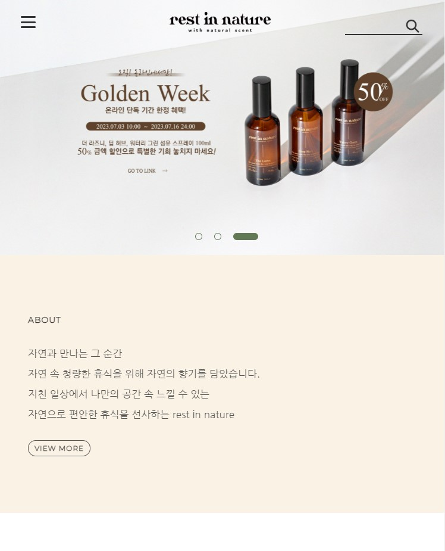
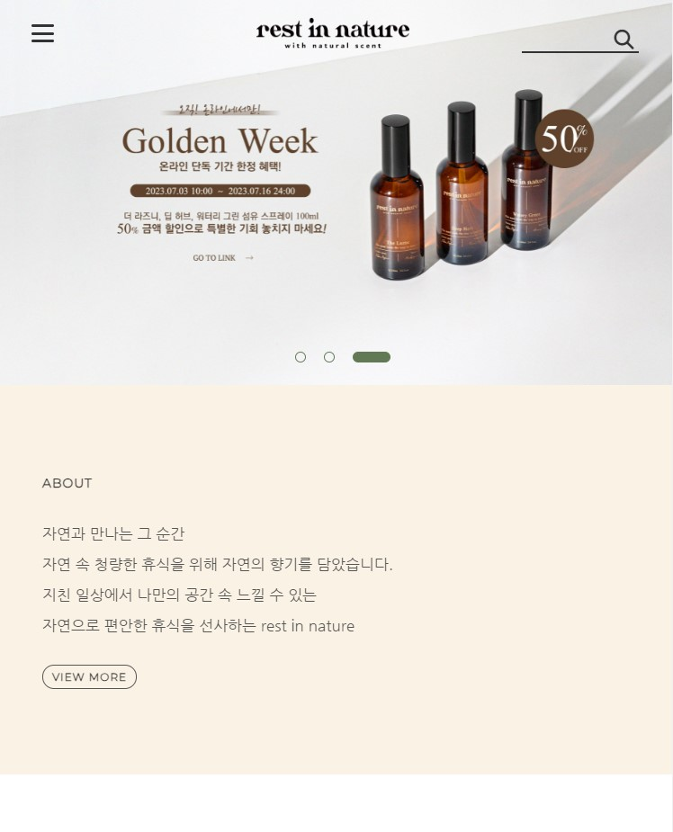

Font
Nanum Gothic(한글)
자연과 만나는 그 순간 rest in nature : basic
자연과 만나는 그 순간 rest in nature : bold
Montserrat(영문)
abcdefg123Rest in Nature
abcdefg123Rest in Nature : bold
abcdefg123Rest in Nature : upper
abcdefg123Rest in Nature : bold&upper
Color
#fff
#333
#faf2e5
#617a55
#3f2305